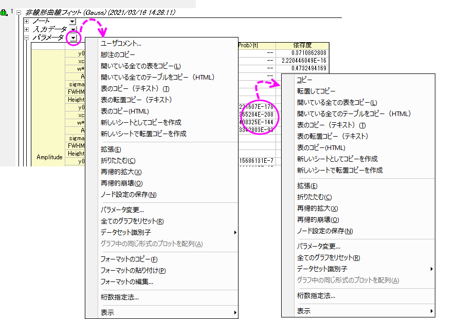
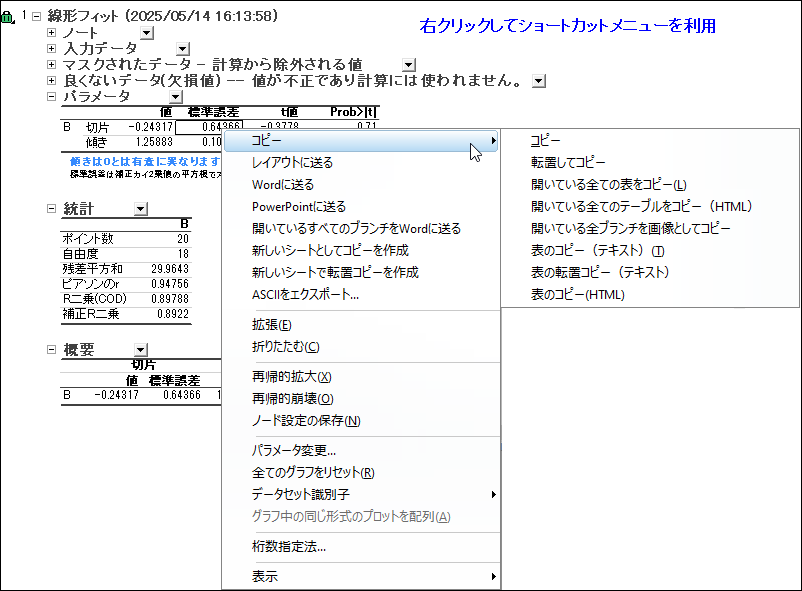
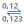

- 分析レポートシートタブにカーソルを合わせると、レポートシート名と入力データを示すツールチップがポップアップ表示されます。
非線形曲線フィットや統計ツールを使って実行するような分析操作は、詳細な分析レポートシートを作成します。 これらのシートにはツリー構造の表が複数表示されます。 各ブランチを開いたり、閉じたりして、各テーブルを表示、非表示することができます。 次の画像は非線形フィットツールを使って、セッション中に生成される標準的な分析レポートシートです。
各ブランチの情報は、数多くのショートカットメニューコマンドを経由してそれぞれ独立して操作できます。各ブランチタイトルの後ろにある下矢印をクリックまたは、テーブル上のセルを右クリックをして、ショートカットメニューにアクセスします。
 
|
| ショートカットメニューコマンド | コメント |
|---|---|
|
ユーザコメント |
レポートワークシートの任意のテーブルにコメントを追加します。 コメントを追加するには、ブランチタイトルを右クリックして、ユーザコメントを選択します。 テキストボックスにコメントを入力します。 |
|
脚注のコピー |
レポートテーブルのすぐ下にある脚注は、統計検定の結論、曲線フィットの統計情報などを含みます。 脚注を直接コピーできませんが、このショートカットメニューを使って、脚注の内容をクリップボードにコピーできます。 |
|
コピー |
|
|
レイアウトに送る |
選択したテーブルまたはグラフのブランチを、新しいレイアウトウィンドウまたは最後にアクティブだったレイアウトウィンドウ、Word、PowerPointファイルにコピーします。 レポートテーブルをレイアウトウィンドウに送る場合、テーブルのスタイルは保持されます。テーブルをダブルクリックすると別ウィンドウで開くことができ、必要に応じて編集できます。編集後にウィンドウを閉じると、変更内容がレイアウト上のテーブルに反映されます。 |
|
開いているすべてのブランチをWord/PowerPointに送る |
開いているすべてのブランチ（テーブルおよびグラフを含む）を、新しいWordまたはPowerPointファイル、あるいは最後にアクティブだったWordまたはPowerPointファイルにコピーします。 |
| 新しいシートとしてコピーを作成 |
新しいシートとしてコピーを作成メニューコマンドを使って、表の内容を新しいシートにコピーします。 Originは、シートをブックに追加し、テーブルの内容を貼り付けます。 |
|
新しいシートで転置コピーを作成 |
「新しいシートで転置コピーを作成」メニューコマンドはコピーを作成と同じ事を行いますが、この場合貼り付けるテーブルは転置されます。 |
|
ASCIIをエクスポート... |
表の現在のブランチをASCIIファイルとしてエクスポートします。エクスポートされたファイル名とフルパスが、メッセージログへのハイパーリンクとして表示されます(ワークスペースの左側にドッキングされます)。ハイパーリンクをクリックすると、ASCIIファイルが直接開きます。 |
|
拡張 |
全てのブランチを拡張または折りたたみます。 |
|
再帰的拡大 |
このノードとサブノードを拡張/開きます。 |
|
ノード設定の保存 |
拡張と折りたたみで目的のビューを表示したら、ノード設定の保存をクリックして分析レポートシートのデフォルトとして設定します。この機能は、展開されたノードのみがエクスポートされるため、レポートシートをPDFなどの画像ファイルとして定期的にエクスポートする場合に便利です。 この設定は、 \UFF\Themes\AnalysisAndReportTable\0-AnalysisName-Default.ort として保存されます。それぞれの分析ツールが1つの設定ファイルを持つことができます。 |
|
パラメータの変更 |
現在の出力に関連付けられているパラメータとともにダイアログボックスを開きます。錠前アイコン（例. ）をクリックして、パラメータの変更を選択するのと同じです。 |
|
全てのグラフをリセット |
全ての埋め込みグラフをリセットして、デフォルト設定を適用します。 |
|
データセット識別子 |
レポートテーブルを認識するデータセット識別子を変更します。コンテキストメニューから <カスタム>...を選択し、@置換を使用して識別子を指定できます。 |
|
グラフ中に同じ形式のプロットを配列 |
同じタイプのプロットを同一グラフ内に配列するかどうか指定します。このオプションは出力グラフブランチに複数のグラフウィンドウがあるときのみ選択できます。 |
|
フォーマットのコピー/貼り付け |
フォーマットのコピーメニューコマンドを使って、テーブルのフォーマット設定をコピーし、フォーマットの貼り付けメニューで、別のテーブルにこの設定を適用します。(次を参照) |
|
桁数指定法... |
詳細は、このセクションを参照して下さい。 |
|
表示 |
テーブルの行と列ヘッダはデフォルトで非表示になっています。 列ヘッダと行ヘッダを選択して、表示したり、非表示にすることができます。 行グリッドまたは列グリッドを選択して、テーブルのグリッド線の表示のオンオフを切り替えることができます。 |
ブランチ内またはレポートシート全体のグラフは、別の グラフブラウザ ウィンドウで表示して切り替えることができます。左パネルにはレポート内で使用可能なグラフが一覧表示され、グラフを選択したり順番に切り替えたりできます。右パネルには選択したグラフが表示されます。 これは、レポートシートに多数のグラフが含まれていて（例：グラフィカル要約）、シート内をスクロールして確認するのが不便な場合に特に便利です。
グラフブラウザでグラフを開くには：
または
どちらの方法でも、レポートグラフブラウザという名前のレイアウトウィンドウが開き、現在のブランチ内またはレポートシート全体のグラフが表示されます。
分析レポートシートに埋め込まれたグラフを編集するには、レポートシート内または レポートグラフブラウザ内のグラフをダブルクリックして、一時的なグラフウィンドウで開きます。
グラフウィンドウで変更を行ったら、ウィンドウ右上の 戻る ボタンをクリックします。一時ウィンドウが閉じ、変更内容がレポートシート内のグラフに反映されます。
いくつかの分析結果は、分析レポートを作成するのではなく、通常のワークシートに出力されます(例えば、フィット曲線のXYデータ)。 これらの出力列は、錠のアイコンが付いています(再計算モードが手動または自動の場合)。 錠のアイコンは、編集がロックされていることを示します。
現在のテーブルの数値データの桁数を設定できます。
テーブルでの桁数を変更する方法
または

をクリックします。テーブルにおける数値列の桁数を変更する方法
| 桁数指定法 |
|
|---|---|
| デフォルトとして保存 | レポートの桁数ダイアログでのみ利用可能です。
桁数の設定をこの分析のデフォルトとして保存する場合はチェックをつけます。分析レポート機能で作成されたレポートシート全てでこの桁数設定が使用されます。オプションダイアログボックスの数値の表現形式タブのレポートでの桁数設定を上書きしないので、注意してください。 |
| Note：
非線形曲線フィットやピーク分析の後のレポートシートでは、パラメータテーブルの桁数はこのダイアログでは更新できません。変更するにはパラメータ変更ダイアログを開き、パラメータタブの有効桁数の値を変更してください。 |
レポートスタイルダイアログボックスは、Originのレポートシートテーブルスタイルを制御するためのインターフェースを提供します。 レポートスタイルのカスタマイズ詳細について詳細は、こちらのページを参照してください。